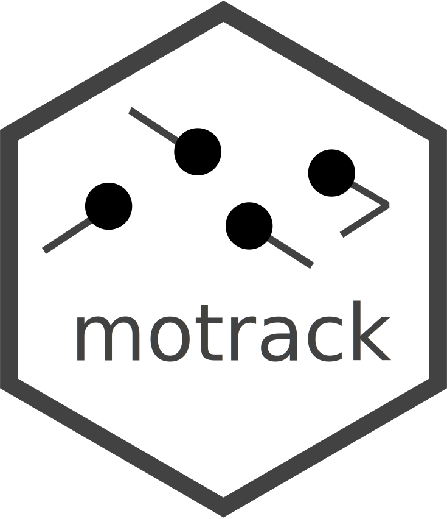

Extrapolates object positions based on current state and time
extrapolate_moment.RdIntended for the use in custom step functions.
Arguments
- moment
Position tibble with extra columns `direction` and `speed`
- timestep
How far into future should the objects move (linearly)
- cur_time
Current time, for time-sensitive speed functions (e.g., accelerations)
- new_time
New time value for the returned object. If omitted, it is calculated automatically as `cur_time + timestep`
Value
Another moment - position tibble with extra columns `direction` and `speed` corresponding to time_next
Examples
moment <- position8c %>% add_random_direction() %>%
dplyr::mutate(speed = 3)
extrapolate_moment(moment, 0.1, 0)
#> # A tibble: 8 × 6
#> object x y direction speed time
#> <int> <dbl> <dbl> <dbl> <dbl> <dbl>
#> 1 1 -1.43 -2.04 3.87 3 0.1
#> 2 2 -3.45 -0.568 5.98 3 0.1
#> 3 3 -3.32 4.71 4.58 3 0.1
#> 4 4 -6.44 -1.10 4.44 3 0.1
#> 5 5 3.98 -5.08 2.34 3 0.1
#> 6 6 0.938 -4.40 5.00 3 0.1
#> 7 7 -5.51 3.56 3.08 3 0.1
#> 8 8 5.62 -2.04 5.03 3 0.1